MIS CINCO SENTIDOS
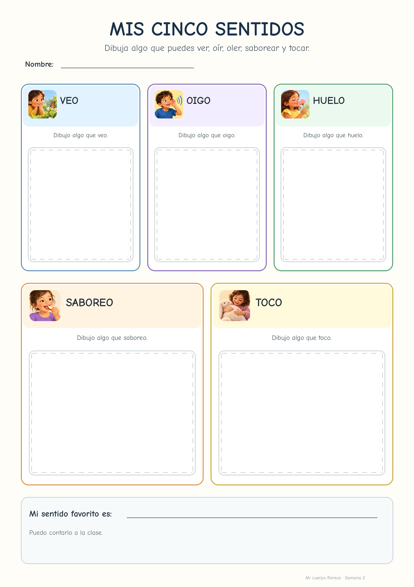
Partimos del libro mentor para hablar de quiénes somos, qué puede contar algo sobre nosotros y cómo usamos VEO · PIENSO · ME PREGUNTO.
Observamos e identificamos partes externas del cuerpo, diferenciamos cuerpo y objetos y explicamos lo que vemos.
Comparamos personas, volvemos al libro mentor y buscamos semejanzas y diferencias apoyándonos en evidencias.
Leemos el texto informativo, buscamos palabras importantes y relacionamos parte del cuerpo → acción.
Hacemos pequeñas estaciones: predecimos, observamos o experimentamos y explicamos qué hemos descubierto.
Clasificamos situaciones, organizamos la información y justificamos nuestras respuestas con “Lo sé porque…”.
Se completa después de terminar las tres sesiones, analizando las tres fichas de trabajo y la observación directa realizada durante las actividades. Genera una valoración final.
Se completa al terminar la semana 2, revisando las fichas de las sesiones 4, 5 y 6 y las observaciones realizadas durante lectura, estaciones y diálogo.
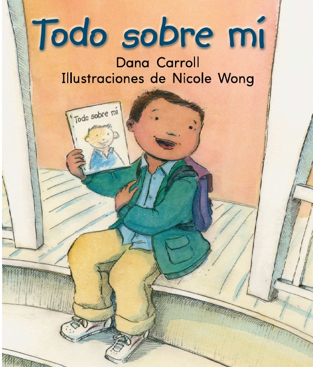
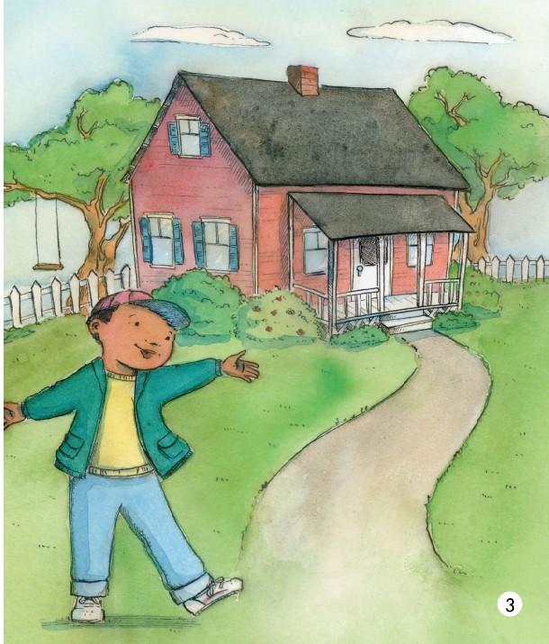
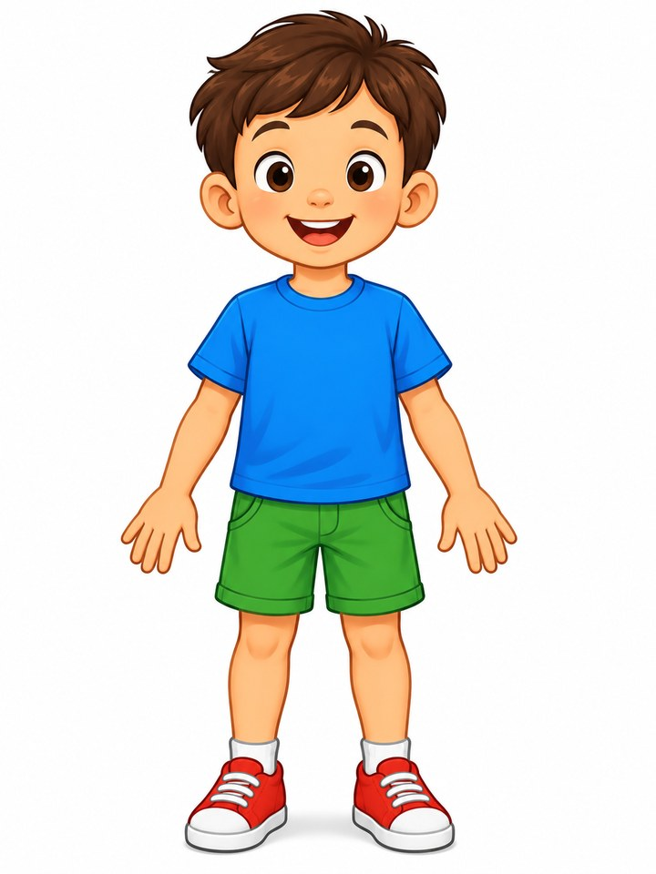
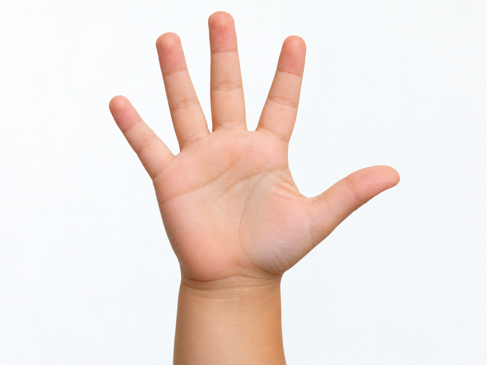
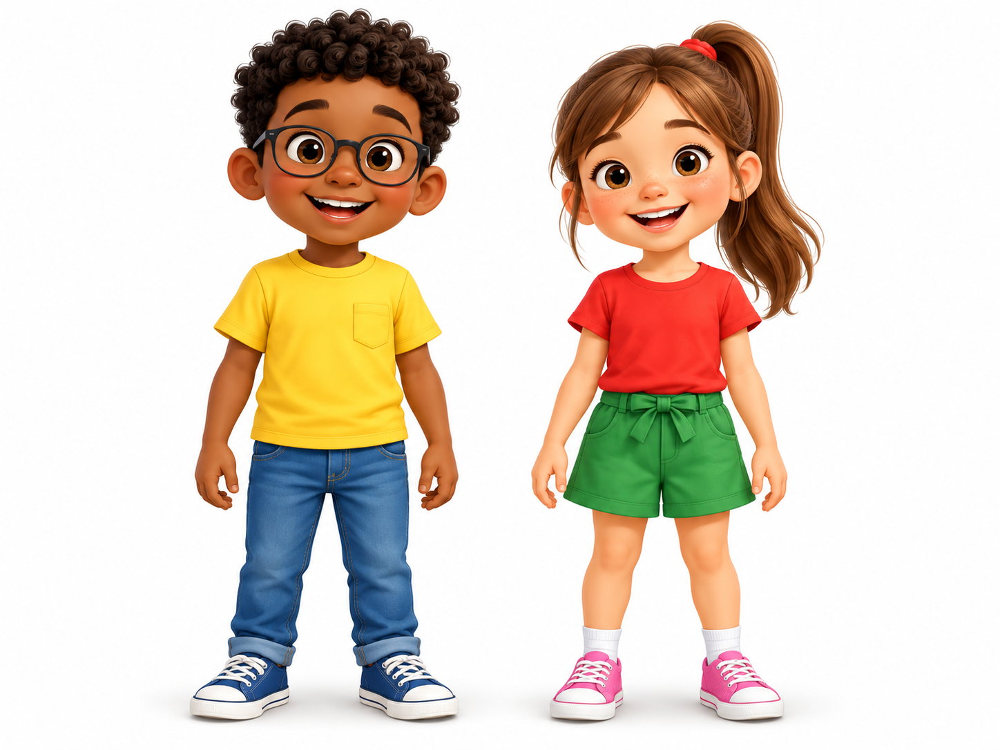
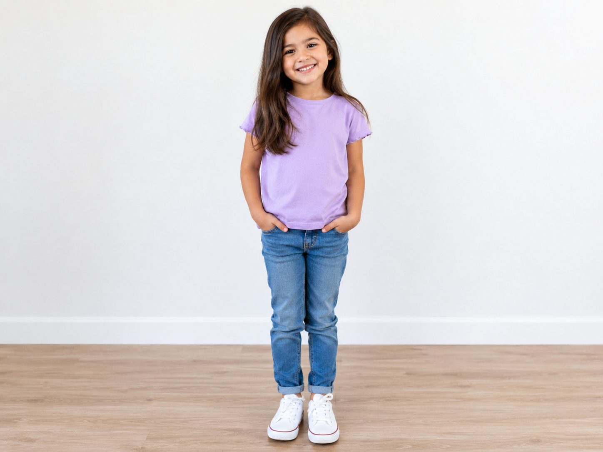
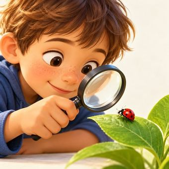
verojos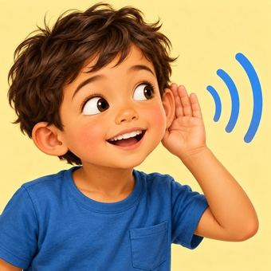
oíroídos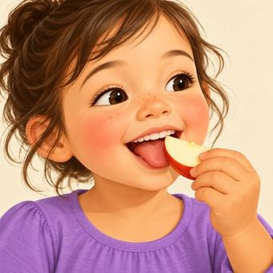
saborearboca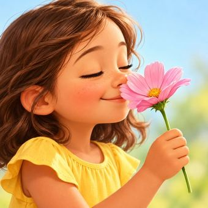
olernariz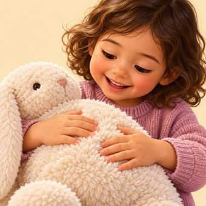
tocarmanos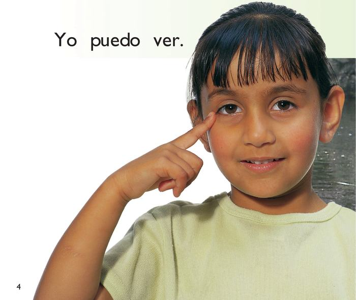
Arrastra cada tarjeta hasta la acción correcta.
Toca una tarjeta de la izquierda y después su pareja de la derecha. Aparecerá una flecha.
Arrastra las tres tarjetas al orden correcto.
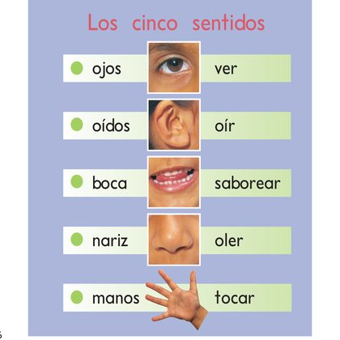
COMPRUEBOLas dos fichas creadas para Descubrimos los cinco sentidos.

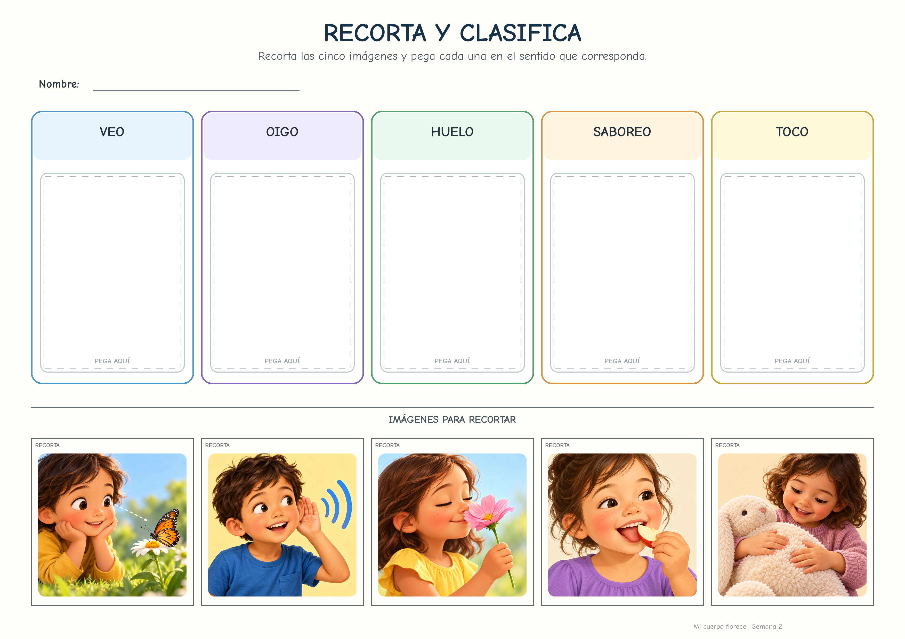
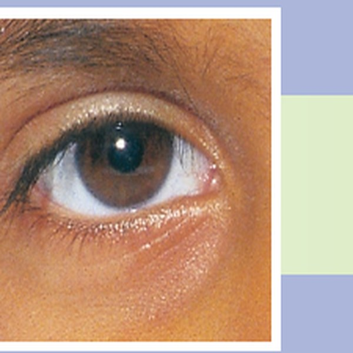
Hago una predicción.
Observo o experimento.
Explico qué pasó.
Mira lo que hace cada niño y arrastra la tarjeta al sentido que está usando.
Arrastra las cuatro tarjetas a los números 1, 2, 3 y 4.
Une cada imagen con la palabra que mejor describe lo que investigamos.
Las fichas de Investigamos con nuestros sentidos.
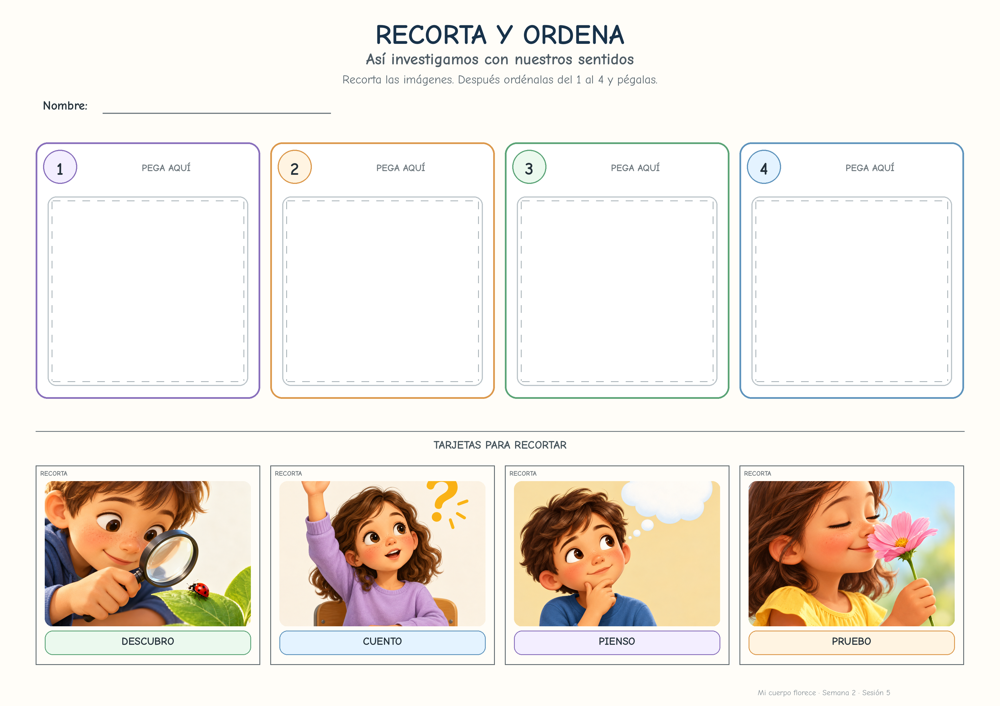
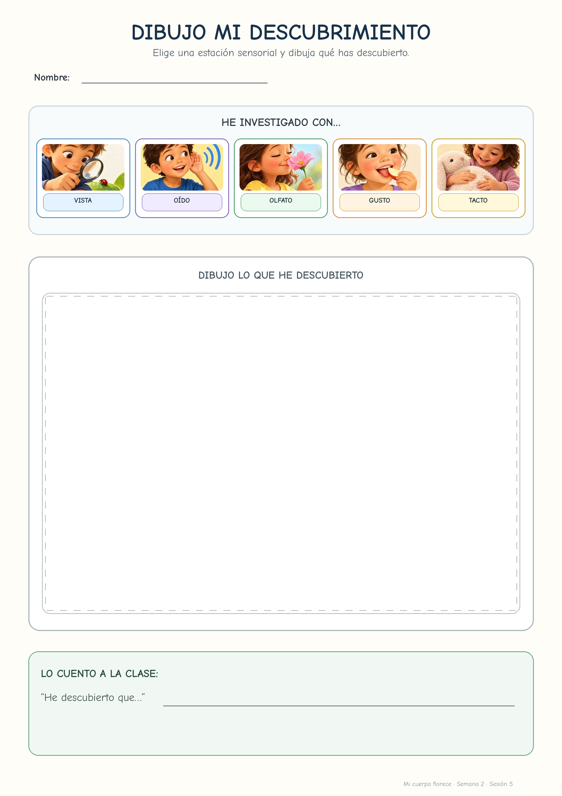
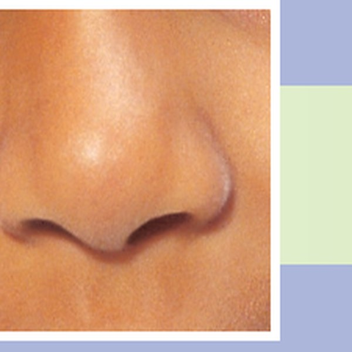
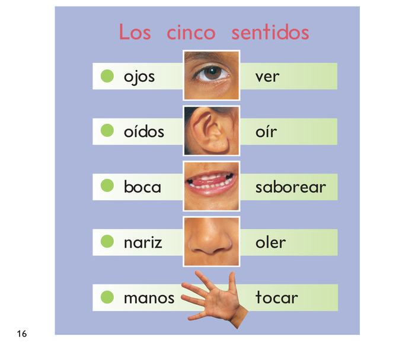
Arrastra cada imagen al sentido principal que estamos trabajando.
Toca una tarjeta de la izquierda y después su pareja.
Ordena: miro la situación, elijo el sentido y explico cómo lo sé.
Las fichas de cierre de ¿Qué sentido uso?.
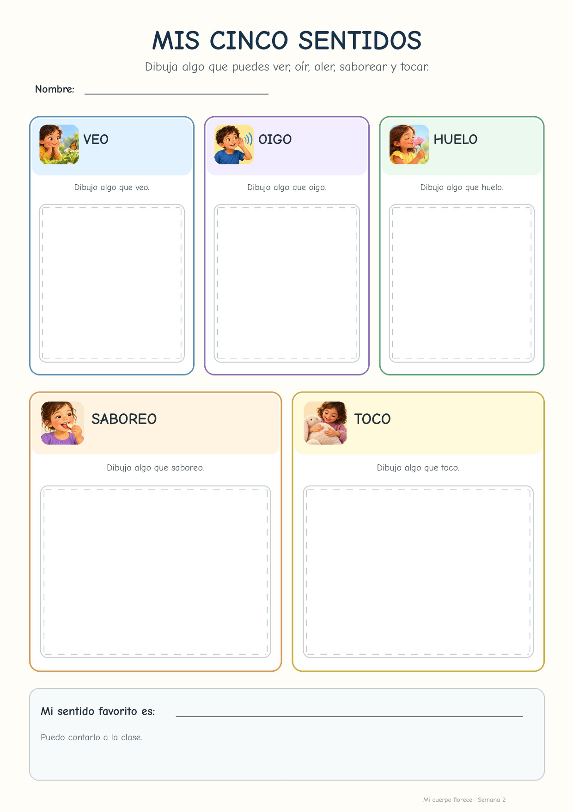
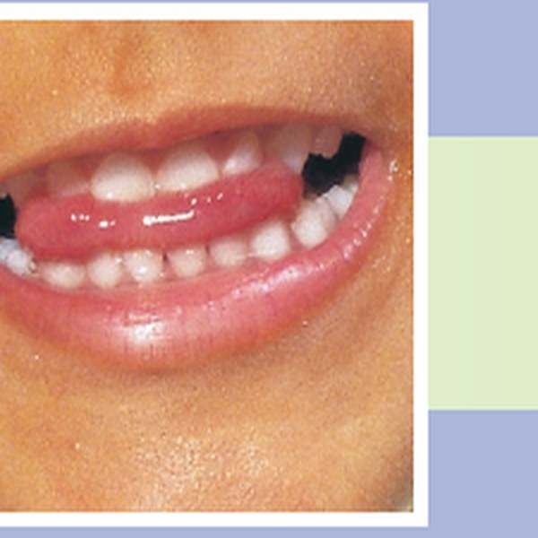
Aquí están juntas las fichas de las sesiones 4, 5 y 6. Cada botón abre un PDF DIN A4 listo para imprimir.
Dibujamos y clasificamos los cinco sentidos.
Ordenamos el proceso y dibujamos un descubrimiento.
| Indicador | Evidencia analizada | Saber | Nivel |
|---|---|---|---|
1. Relaciona partes del cuerpo con los sentidos Relaciona ojos-ver, oídos-oír, boca-saborear, nariz-oler y manos-tocar. | Sesión 4 · ficha “Mis cinco sentidos”. | I.2.3 20 % | |
2. Investiga usando los sentidos Hace una predicción, prueba u observa y registra o explica un descubrimiento. | Sesión 5 · ficha “Pequeños científicos”. | I.1.1–I.1.5 20 % | |
3. Aplica y justifica qué sentido usa Clasifica ejemplos y explica “Lo sé porque…” apoyándose en el libro, el cuerpo o la experiencia. | Sesión 6 · ficha “¿Qué sentido uso?” + explicación. | I.1.1–I.1.5 · I.2.3 20 % |
| Indicador | Evidencia analizada | Saber / proceso | Nivel |
|---|---|---|---|
4. Observa, predice y comprueba Mira o escucha antes de responder, anticipa y modifica su idea cuando la evidencia lo requiere. | Lectura informativa + estaciones. | I.1.1–I.1.5 10 % | |
5. Dialoga y explica evidencias Usa vocabulario trabajado y explica oralmente qué ha observado o cómo lo sabe. | Diálogos de las sesiones 4–6. | I.1.1–I.1.5 10 % | |
6. Mantiene la atención y participa Sigue las consignas, respeta turnos y participa en lectura, clasificación o estaciones. | Observación directa. | Proceso de trabajo 10 % | |
7. Trabaja con autonomía y cuidado Inicia y mantiene la tarea, usa materiales correctamente e intenta resolver antes de pedir ayuda. | Trabajo individual y estaciones. | Proceso de trabajo 10 % |
| Indicador | Evidencia analizada | Saber | Nivel |
|---|---|---|---|
1. Se representa y comunica aspectos sobre sí mismo/a La producción es coherente con la actividad y puede explicar qué cuenta sobre sí. | Sesión 1 · ficha “Así soy yo” + explicación del dibujo. | I.2.3 · I.2.7 20 % | |
2. Reconoce y representa partes externas del cuerpo El dibujo permite identificar partes externas y la explicación oral muestra comprensión. | Sesión 2 · ficha “Este es mi cuerpo”. | I.2.3 20 % | |
3. Compara personas con respeto Registra una semejanza y una diferencia observables y puede explicarlas. | Sesión 3 · ficha “Yo y otra persona”. | I.2.3 · I.2.7 20 % |
| Indicador | Evidencia analizada | Saber / proceso | Nivel |
|---|---|---|---|
4. Observa, pregunta y busca evidencias Mira antes de responder, usa rutinas de pensamiento y señala qué le permite saber algo. | Observación directa durante las tres sesiones. | I.1.1–I.1.5 10 % | |
5. Dialoga y explica lo que piensa Responde, formula preguntas, usa vocabulario trabajado y justifica oralmente. | Diálogos y respuestas orales observadas durante las sesiones. | I.1.1–I.1.5 10 % | |
6. Mantiene la atención y participa Sigue la actividad, atiende a las consignas y se incorpora al diálogo o a la tarea. | Atención y participación observadas durante las sesiones. | Proceso de trabajo 10 % | |
7. Trabaja con autonomía Inicia y mantiene la tarea, usa materiales, intenta resolver y pide ayuda cuando la necesita. | Autonomía observada + desarrollo de las fichas. | Proceso de trabajo 10 % |